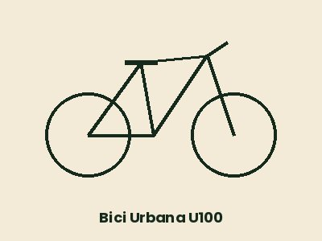

Qué bici llevar

Al ser una ruta llana y asfaltada, basta con una bici urbana: no hacen falta marchas ni suspensión. Lleva agua, luces si vuelves de noche y un candado para parar en Matadero.
Un paseo llano y sin coches por el parque que recorre la orilla del Manzanares, desde el Puente del Rey hasta el Nudo Sur. Es la ruta que más hago los fines de semana.
| Tramo | Distancia | Tiempo | Qué ver |
|---|---|---|---|
| Puente del Rey → Puente de Segovia | 1,2 km | 6 min | Vistas del Palacio Real |
| Puente de Segovia → Puente de Toledo | 1,8 km | 9 min | Salón de Pinos |
| Puente de Toledo → Matadero | 1,0 km | 5 min | Puente de Arganzuela |
| Matadero → Nudo Sur | 2,5 km | 13 min | Playa urbana y fuentes |
| Total | 6,5 km | 33 min | Distancias aproximadas |

Al ser una ruta llana y asfaltada, basta con una bici urbana: no hacen falta marchas ni suspensión. Lleva agua, luces si vuelves de noche y un candado para parar en Matadero.